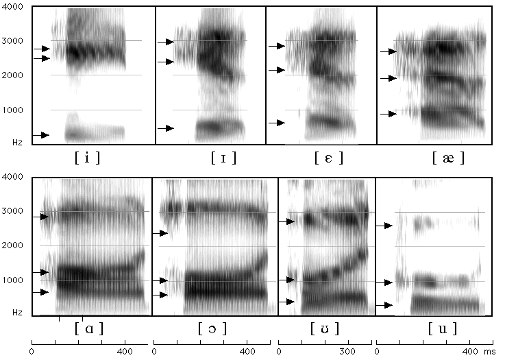

Return to chapter 8 contents page
Figure 8.17

Figure 8.17 A spectrogram of the words heed, hid, head, had, hod, hawed, hood, who’d as spoken by a female speaker of American English. The locations of the first three formants are shown be arrows.